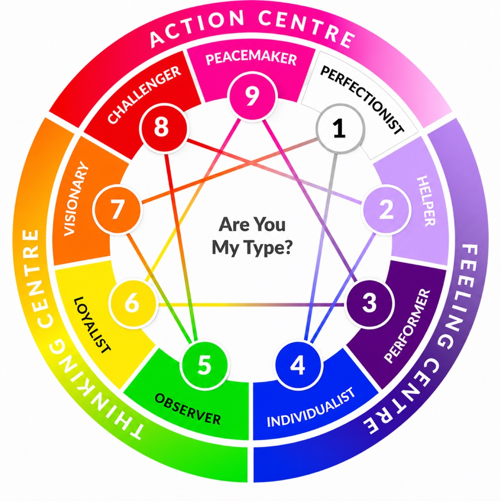

The Enneagram is a powerful and dynamic personality system that moves beyond surface-level behaviors to uncover the core motivations and unconscious fears that drive human nature. While many tools describe what you do, the Enneagram explains why you do it.

The Nine Types of the Enneagram
At Caroline Dawson International (CDI), we treat the Enneagram as the "deep-dive" tool for Transformational Leadership. While other assessments focus on how we behave, the Enneagram is unique because it uncovers the internal motivations and core fears that drive those behaviors.
By understanding the why behind the work, we help leaders break free from autopilot habits and move toward intentional, conscious leadership.
We facilitate the Enneagram through the lens of Emotional Intelligence (EQ). Our sessions explore the nine distinct personality types and how they navigate stress, security, and professional growth.
The result of an Enneagram journey with CDI is a shift from surface-level cooperation to deep-rooted empathy and psychological safety:
The Enneagram reveals the "hidden" drivers of our behavior. The result is a leader who understands why they avoid conflict or why they over-analyze data. This self-awareness prevents "accidental" leadership and replaces it with strategic intent.
By understanding the core fears of their colleagues, team members stop judging behaviors and start supporting motivations. The result is a high-trust culture where people feel safe to be authentic because they are truly understood.
Because the Enneagram maps how each type reacts to stress, the result is a proactive resilience strategy. Teams can identify "early warning signs" of stress in one another and intervene before burnout or conflict occurs.
The Enneagram connects professional performance to personal values. The result is a workforce that is more engaged and purpose-driven, as individuals learn how to align their unique "Type" strengths with the organization's mission.
A flexible, high-impact delivery designed to fit your team's calendar and goals.
Half-day or full-day training workshop.
Live facilitated session, delivered onsite or virtually.
Workshop content and delivery can be tailored to meet your organisation's goals and audience profile.
Interactive group activities, deep-dive reflection exercises, and expertly guided debriefs in a psychologically safe space.
Organizations partner with Caroline Dawson International (CDI) because we move beyond simple personality "types" to uncover the deep-seated motivations that drive organizational culture. We facilitate a shift from surface-level behavior to profound emotional intelligence.
Our experts specialize in the "why" behind the "what." We help leaders identify the underlying fears and desires that drive their decision-making, leading to a level of self-mastery that traditional behavioral tools cannot reach.
The Enneagram is unparalleled for navigating team tension. Our experts provide a framework for understanding "Triggers and Reactions," allowing teams to resolve conflict with deep empathy rather than just professional politeness.
We focus on the "Lines of Integration and Disintegration." This helps leaders recognize how their personality shifts under pressure, providing a clear path for remaining centered and effective during high-stress organizational changes.
By uncovering the diverse worldviews within a team, our experts foster an environment of radical inclusion. Teams move from judging different perspectives to valuing them as essential components of a balanced workforce.
Given the personal nature of the Enneagram, our experts create a psychologically safe space for discovery. We ensure that every insight is used to empower the individual and strengthen the collective, never to "box" anyone in.
The Enneagram is a motivation-based system that identifies nine distinct personality types. While tools like DISC focus on outward behavior, the Enneagram explores the "why" — the core fears and desires that drive your actions. Our experts use this to help teams build deep emotional intelligence and self-mastery.
A half-day session (4 hours) focuses on Type Identification, helping participants find their core number and understand their personal worldview. A full-day session (8 hours) dives into Team Dynamics, exploring the "Lines of Integration" and how different types interact, react to stress, and resolve conflict collectively.
Because the Enneagram involves deeper personal reflection, our experts recommend a group size of 12 to 30 participants. This ensures a high level of psychological safety and allows for meaningful group debriefs where every voice can be heard.
Yes. We facilitate onsite sessions to create a familiar and convenient environment for your team. Our experts provide all necessary materials; we simply require a quiet, private meeting space with audio-visual capabilities (projector and screen) to maintain the focus required for this deep-dive work.
Absolutely. We specialize in bespoke runs for leadership teams and departments looking to improve their "soft power" and EQ. Share your preferred dates and team goals, and our experts will design a customized journey that aligns with your organization's culture and timeline.
Talk to our facilitators about scoping an Enneagram workshop for your leadership team — or download our free guide to communication breakdowns first.